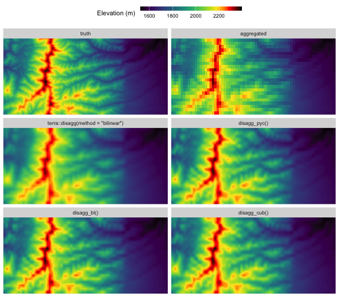
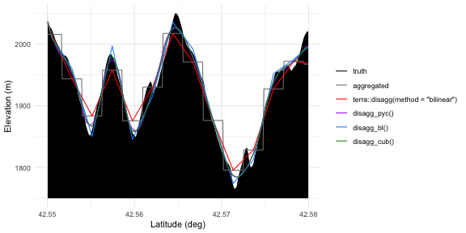
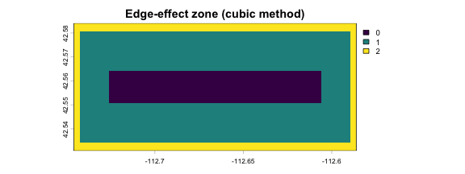
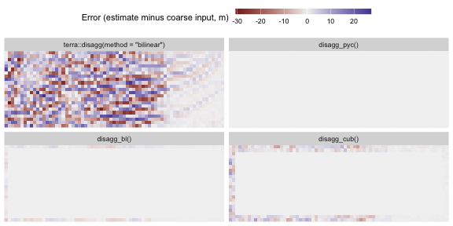
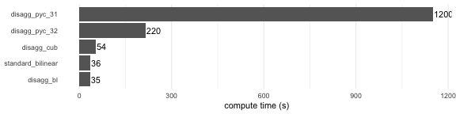

Comparing disaggregation methods on a digital elevation model
Source:vignettes/articles/method-comparison.Rmd
method-comparison.RmdThis article compares raster disaggregation methods on digital elevation data for a mountainous area in Idaho.
The plan:
- Start with a known fine-resolution DEM as our ground truth; in a real analysis, this would usually be unknown.
- Aggregate it to a coarser grid, to simulate a lower-resolution input you’d typically start with.
- Use each method to disaggregate back to fine scale, to see how well they recover the true fine-scale pattern.
- Re-aggregate each of these back to the coarse resolution, to see how well the methods recover the coarse input data.
Steps 1 and 2 give us the input data. Step 3 tests consistency with the true fine-scale variation; step 4 tests consistency with the coarse input.
library(terra)
library(terraces)
library(ggplot2)
library(dplyr)
library(tidyr)
terra::terraOptions(progress = 0)Prepare the input
We’ll use a small DEM from Moonshine Peak in Idaho, included alongside this article. Let’s load the raster and aggregate it by a factor of 25 (chosen to make the method differences clearly visible).
A bit of cleanup before aggregation will also be helpful.
terra::aggregate() by default expands the coarse raster’s
extent when the input’s dimensions aren’t divisible by
fact, leaving partial blocks at the right and bottom edges.
Those partial blocks would complicate the residual analysis later in
this article, so we’ll trim the truth to whole-block dimensions before
aggregating.
truth <- rast("moonshine.tif") |> setNames("truth")
fact <- 25L
# Trim to dimensions exactly divisible by `fact`
truth[((nrow(truth) %/% fact) * fact + 1):nrow(truth), ] <- NA
truth[, ((ncol(truth) %/% fact) * fact + 1):ncol(truth)] <- NA
truth <- trim(truth)
coarse <- aggregate(truth, fact, fun = "mean", na.rm = TRUE)Apply the methods
We run five disaggregation methods: two standard ones from
terra (nearest-neighbor and bilinear), and three
mass-preserving methods from terraces.
# Standard terra methods
nn <- disagg(coarse, fact, method = "near")
bl <- disagg(coarse, fact, method = "bilinear")
# terraces mass-preserving methods
bl_ac <- disagg_bl( coarse, fact)
cub_ac <- disagg_cub(coarse, fact)
pyc_ac <- disagg_pyc(coarse, fact)
# Stack all outputs with the truth raster, aligned to the same extent
r <- rast(c(nearest = nn,
std_bilinear = bl,
ac_bilinear = bl_ac,
ac_cubic = cub_ac,
ac_pycno = pyc_ac))
r <- crop(r, crop(truth, r))
r <- c(crop(truth, r), r)Recovering the fine-scale truth
Let’s take a look at the disaggregated results. We’ll start with some maps to get a high-level sense for the differences, and then look at a transect to visualize the shapes of the fitted disaggregation functions.
Mapping the results
dr <- as.data.frame(r, xy = TRUE) |>
pivot_longer(-c(x, y), names_to = "metric", values_to = "value") |>
mutate(metric = factor(metric, levels = method_levels,
labels = method_labels))
ggplot(dr, aes(x, y, fill = value)) +
geom_raster() +
facet_wrap(~ metric, ncol = 2) +
scale_fill_gradientn(colors = c("black", scales::pal_viridis()(12),
"orange", "red", "darkred", "black")) +
coord_cartesian(expand = FALSE) +
guides(fill = guide_colorbar(barwidth = 12, barheight = .5)) +
theme(axis.title = element_blank(),
axis.text = element_blank(),
axis.ticks = element_blank(),
legend.position = "top") +
labs(fill = "Elevation (m) ")
plot of chunk 2d-maps
The first row shows the true high-res DEM and the coarse aggregated raster (visually identical to nearest-neighbor disaggregation), while the other maps show estimates generated by the disaggregation methods.
- Standard bilinear interpolation via
terra::disagg(method = "bilinear")produces an image that’s less sharp than the others: it underestimates peak elevation along the north-south ridgeline, and has less contrast in the ridge-valley systems at the center of the image. -
disagg_bl(), corrects this, but like standard bilinear it does show obvious visual artifacts of the rectangular grid, such as sharp grid-aligned features along the main north-south ridgeline. -
disagg_cub()anddisagg_pyc()are visually indistinguishable at this scale. Likedisagg_bl(), both recover more of the true topographic range than standard bilinear interpolation, but they produce smoother outputs without the sharp grid-aligned peaks. - Of course, none of the methods recovers all the fine-scale detail in the true raster, as this information content is genuinely lost during aggregation.
Visualizing curve shapes
A 1D transect through the middle of the raster makes the methods’ fine-scale behavior easier to compare. To make the visualization cleaner, we’ll grab a column that goes through the centers of the coarse cells so that the bilinear fits are genuinely 1D, and we’ll look at just the middle section of the transect.
# Select column near the middle of raster that aligns with coarse cell centers
xs <- sort(unique(dr$x))
n_coarse_cols <- length(xs) %/% fact
mid_coarse_col <- n_coarse_cols %/% 2L
center_idx <- (mid_coarse_col - 1L) * fact + (fact + 1L) %/% 2L
transect <- filter(dr, x == xs[center_idx])
# Zoom in to central chunk of transect
transect <- filter(transect, between(y, 42.55, 42.58))
ggplot(transect, aes(y, value, color = metric)) +
geom_ribbon(data = filter(transect, metric == "truth"),
aes(ymin = 1750, ymax = value),
fill = "black", alpha = 1, color = NA) +
geom_line() +
scale_color_manual(values = c("black", "gray50", "red", "purple", "dodgerblue", "forestgreen")) +
theme_minimal() +
labs(x = "Latitude (deg)", y = "Elevation (m)", color = NULL)
plot of chunk transect
The original ground truth (black) and the coarse-cell aggregated staircase (gray) show our input data. Standard bilinear (red) passes through the centers of the staircase steps cleanly, but otherwise underrepresents the true terrain variability, smoothing peaks and filling valleys. Pre-sharpened bilinear (blue) has sharp peaks and valleys at the same horizontal locations as standard bilinear, but tracks the truth more closely since it accounts for the fact that coarse values represent block means rather than point samples. The pycnophylactic (purple) and pre-sharpened cubic (green) methods also respect the block means, but are smoother than pre-sharpened bilinear and their peaks and valleys are not snapped to coarse cell centers; these two curves are extremely similar in this example.
Handling edge effects
The pre-sharpening methods (disagg_bl() and
disagg_cub()) use kernel filters at two different scales: a
pre-sharpening filter operating on the coarse raster with a broader
kernel, and a disaggregation kernel operating on the fine-scale raster
with a relatively narrow kernel. Cells where either of these kernels
overlaps the raster boundary are subject to edge effects that increase
uncertainty in the results. The edge_effects() function
maps the affected zone, which is useful when you need to know which
cells are influenced by this uncertainty.
ee <- edge_effects(coarse, fact, method = "cubic")
plot(ee, main = "Edge-effect zone (cubic method)")
plot of chunk edge-effects
Values of 1 indicate cells within the pre-sharpening kernel radius where the focal pass uses reflective padding; values of 2 indicate cells that are also within the interpolator’s reach of the boundary where disaggregation falls back to lower-order interpolation. Both zones have slightly increased mass-preservation error compared to the interior, with the level-2 band being the worse of the two by far.
The implication here is that when possible, you should run these algorithms over a slightly larger region than your key study area, so that your study area itself is free of edge effects, particularly level-2 effects. You can then crop out the boundary region to get a final result that is free of edge effects.
Quantifying accuracy
A lot of the differences between the three terraces
methods boil down to their assumptions about shapes of the fine-scale
surface being estimated, and none of these is necessarily better than
the others. But we can still put some numbers to the question of how
closely the disaggregated results match the true fine-scale raster in
this particular DEM. Let’s mask out the edge band and then, for each
method, compare the estimate to the truth by calculating the maximum
difference, the average difference, and the difference in the overall
elevation range.
# Fine-scale comparison, masking edge zone for fair comparison
rm <- mask(r, ee, maskvalues = 2)
as.data.frame(rm, xy = TRUE) |>
pivot_longer(-c(x, y, truth), names_to = "metric", values_to = "estimate") |>
filter(metric != "nearest") |>
mutate(metric = factor(metric, levels = method_levels, labels = method_labels)) |>
group_by(metric) |>
summarise(`max abs. error (m)` = max(abs(estimate - truth), na.rm = TRUE),
`RMSE (m)` = sqrt(mean((estimate - truth)^2, na.rm = TRUE)),
`range error (m)` = diff(range(estimate)) - diff(range(truth)),
.groups = "drop") |>
arrange(`RMSE (m)`) |>
knitr::kable(digits = 3)| metric | max abs. error (m) | RMSE (m) | range error (m) |
|---|---|---|---|
| disagg_pyc() | 70.548 | 14.061 | -28.094 |
| disagg_cub() | 70.034 | 14.212 | -22.483 |
| disagg_bl() | 70.525 | 14.934 | 2.122 |
| terra::disagg(method = “bilinear”) | 80.422 | 19.295 | -49.381 |
All three terraces methods cluster closely on overall
accuracy, with RMSE values around 14 m and max errors near 70 m.
Standard bilinear is meaningfully worse on both — and dramatically worse
on range, compressing the elevation range by nearly 50 m. The
terraces methods order differently on range than on RMSE:
disagg_bl() recovers the true range most closely (within 2
m), while the smoother disagg_cub() and
disagg_pyc() undershoot range by ~25 m because their
smoothness priors damp within-block peaks that exist in this particular
raster.
Note that these fine-scale errors can’t go to zero the way the
coarse-scale errors shown below do, because aggregation destroys
information that no method can recover. The fine-scale comparison
measures how close each method gets to the unattainable lower bound; the
meaningful signal here is the gap between standard bilinear and the
terraces methods, not the absolute magnitude of any
individual number.
Recovering the coarse input
The defining property of the terraces methods is that
re-aggregating the fine output recovers the original coarse values.
Standard bilinear, by contrast, does not. We can verify this by
aggregating each fine output back to coarse resolution and comparing it
to the input. Let’s compare them visually, and also calculate some
accuracy statistics.
Mapping the discrepancies
a <- aggregate(r, fact, fun = "mean", na.rm = TRUE)
to_df <- function(a) {
as.data.frame(a, xy = TRUE) |>
select(-nearest) |>
pivot_longer(-c(x, y, truth), names_to = "metric", values_to = "estimate") |>
mutate(metric = factor(metric, levels = method_levels, labels = method_labels))
}
da <- to_df(a)
ggplot(da, aes(x, y, fill = estimate - truth)) +
geom_raster() +
facet_wrap(~ metric, ncol = 2) +
scale_fill_gradient2(mid = "gray95", name = "Error (estimate minus coarse input, m) ") +
coord_cartesian(expand = FALSE) +
guides(fill = guide_colorbar(barwidth = 12, barheight = .5)) +
theme(axis.title = element_blank(),
axis.text = element_blank(),
axis.ticks = element_blank(),
legend.position = "top")
plot of chunk residuals
This shows us several things:
-
terra::disagg(method = "bilinear")has substantial residuals spread across the entire raster. Standard bilinear is not designed to preserve block means. -
disagg_pyc()has machine-precision residuals everywhere (essentially zero), confirming exact mass preservation by construction. -
disagg_bl()has a small residual band confined to the boundary, where the 3×3 inverse kernel’s finite-radius approximation degrades. Interior residuals are negligible. -
disagg_cub()also has negligible error in the interior, but shows a slightly wider boundary band, consistent with cubic’s larger 5×5 inverse kernel and the cubic interpolator’s longer boundary reach. This is consistent with the edge-effect band we mapped in the previous section.
Quantifying accuracy
Let’s mask out results from the boundary band and calculate the accuracy of these methods:
# Mask aggregated rasters with coarse-resolution mask
coarse_mask <- aggregate(ee, fact, fun = "max", na.rm = TRUE)
am <- mask(a, coarse_mask, maskvalues = 2)
to_df(am) |>
mutate(residual = abs(estimate - truth)) |>
group_by(metric) |>
summarise(`max abs. error (m)` = max(residual, na.rm = TRUE),
`RMSE (m)` = sqrt(mean(residual^2, na.rm = TRUE)),
`range error (m)` = diff(range(estimate)) - diff(range(truth)),
.groups = "drop") |>
arrange(`max abs. error (m)`) |>
knitr::kable(digits = 3)| metric | max abs. error (m) | RMSE (m) | range error (m) |
|---|---|---|---|
| disagg_pyc() | 0.000 | 0.000 | 0.000 |
| disagg_bl() | 0.007 | 0.006 | -0.002 |
| disagg_cub() | 0.012 | 0.011 | -0.003 |
| terra::disagg(method = “bilinear”) | 29.360 | 10.446 | -24.216 |
After reaggregation, disagg_pyc() has essentially
perfect mass preservation (up to machine precision).
The pre-sharpening methods also reconstruct the coarse means extremely well, with an average error of ~1 cm across a DEM whose elevation range spans more than 800 m. This residual error arises because these methods use finite-sized pre-sharpening filters that truncate the infinitely-large theoretically-perfect versions, but for most analyses this is negligible compared to other sources of uncertainty.
The standard bilinear interpolation is off by nearly 30 m in some locations, and by more than 10 m on average. These errors are non-random – they are biased toward compressing variability, in this case under-representing the coarse-scale elevation range by ~24 m.
Compute speed
The coarse raster we’re working with here is fairly small, so all the code above ran quite quickly. But for a larger raster, compute speed can become an issue that affects your choice of method. Let’s do a quick benchmark here comparing these same four methods on speed. Instead of using the coarse raster as input here, as it’s unrealistically small, we’ll further disaggregate a section of the “truth” raster.
Let’s benchmark two versions of disagg_pyc(): one with
fact = 32 and one with fact = 31. While
seemingly similar, these will trigger very different behaviors in the
function’s routine for efficiently cascading through intermediate
resolutions. 32 is a best case scenario—it’s a power of 2 so it has
optimal prime factorization, allowing the function to internally run six
relatively fast steps each with fact = 2. 31 is a worst
case scenario—it’s a prime that can’t be factorized into sub-steps, so
the function has to slog through a single big optimization that requires
lots of iterations for its narrow smoothing kernel to propagate
information across the high-resolution raster.
input <- crop(truth, ext(truth) * 0.75)
speed <- function(expression) as.vector(system.time(expression)["elapsed"])
times <- c(
standard_bilinear = speed(terra::disagg(input, 32, method = "bilinear")),
disagg_bl = speed(disagg_bl(input, 32)),
disagg_cub = speed(disagg_cub(input, 32)),
disagg_pyc_32 = speed(disagg_pyc(input, 32)),
disagg_pyc_31 = speed(disagg_pyc(input, 31))
)
times <- data.frame(method = names(times), seconds = times) |>
arrange(seconds) |>
mutate(method = factor(method, levels = method))
ggplot(times, aes(seconds, method, label = signif(seconds, 2))) +
geom_col(fill = "gray40") +
geom_text(hjust = 0, nudge_x = 2) +
theme_minimal() +
theme(panel.grid.major.y = element_blank()) +
labs(x = "compute time (s)", y = NULL)
plot of chunk benchmark
These results are specific to the particular scales of this example, but their rank order should hold across most situations, and they give a reasonable sense for the relative speed of these functions. The two pre-sharpening methods run in the same order of magnitude as standard bilinear, because they only add a single cheap pre-filter pass on the coarse input raster; cubic is slower than bilinear mainly because its interpolation kernel is a bit wider.
The pycnophylactic methods are substantially slower because they are
iterative convergence algorithms rather than deterministic one-pass
solutions. The two pycno timings illustrate the sensitivity of this
algorithm to the exact value of fact. If you’re using pycno
with a large raster and a large fact, and you have
flexibility over fact, choosing composite values with lots
of small prime factors can dramatically increase speed.
Take-home messages
- All the mass-preserving (“aggregation-consistent”) methods in
terracessubstantially outperform standard bilinear interpolation in both disaggregation and re-aggregation accuracy. This is expected given that bilinear interpolation between cell centers assumes cell values are point estimates at centroids rather than being block means over the cell area. - The three
terracesmethods differ mainly in their geometric assumptions. Bilinear pre-sharpening assumes that the fine-scale field is best approximated by piecewise linear planes that connect at coarse cell centers. Cubic pre-sharpening assumes it is best approximated by locally smooth curves with no discontinuities or kinks. Pycnophylactic disaggregation assumes it’s best approximated by a field that minimizes isotropic global curvature. None of these assumptions is strictly better than the others. - Of the mass-preserving methods, pycnophylactic interpolation
(
disagg_pyc()) has the highest round-trip accuracy, is not subject to edge effects near raster boundaries, and produces the smoothest high-resolution surfaces that are consistent with the data. However, it is also the slowest computationally, particularly whenfactis not readily decomposable into prime factors. It’s a good choice if your use case is not compute-constrained or if mass preservation near your raster edges is key. - The pre-sharpening methods (
disagg_bl(),disagg_cub()) perform nearly as well as pycno and typically run in a small fraction of the time. They have edge effects to be aware of near raster boundaries, as well as a tiny amount of error across the domain that arises from kernel truncation. - The cubic pre-sharpening method (
disagg_cub()) produces results that are very close to pycno, at a small fraction of the compute time. For many users, this is a sensible default that gives you both good accuracy and good speed.